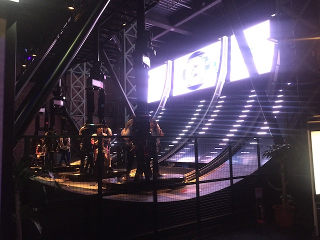

| |
Tokyo Joypolis Review

Tokyo Joypolis is....an interesting park. If you can even call it a theme park. Yeah. This place isn't really a theme park. At least not in the traditional sense. True, they do have a roller coaster at this place. So it offically counts by Incrediblecoasters standards (that's why you see reviews of certain Vegas Hotels on this site). But by normal standards, Tokyo Joypolis is...sort of a theme park. But....kind of not. OK. Then just what the hell is Tokyo Joypolis then? Well...hard to describe this place, but let me put it this way. Tokyo Joypolis is what Dave and Busters should be! It's like Dave & Busters on steroids! I call it like Dave & Busters as the park itself really does have a similar vibe to Dave & Busters. OK, there's more rides here and not as much drinking. But this place sort of has this....arcade vibe. It's like being at an arcade on steroids. That has the coolest games ever! Yeah, it may not all feel like an amusement park. Even other indoor theme parks don't at all feel like Toyko Joypolis. It just has its own unique feel. And it's just a ton of fun. The rides are pretty arcadeish, so if looking at screens isn't your thing, then Tokyo Joypolis probably isn't the best place for you. But all the attractions are a ton of fun (I go into further details down below) and if you're in Tokyo, you should totally stop on by and check this place out.
Rollercoasters
There is a link to a review of all the Rollercoasters at Tokyo Joypolis.
Top Coasters
Gekion Live Coaster Review

Flat Rides
Here are all of the flat rides at Tokyo Joypolis. Well....this is....sort of a flat ride. Yeah. Some may say that this is not a flat ride, but is rather, a game instead. A couple people people may try and call this a credit, but....NO!!! That would be Halfpipe Canyon. So Halfpipe Canyon is basically, a Halfpipe. You stand on a snowboard with one other person, and you go up and down the halfpipe, kind of like the Half-Pipe roller coasters (STILL NOT A CREDIT!!!). However, how you get this ride to spin...that's the game. You see, you have to work together with the other person to get the ride going. Then you work together to make the ride spin. One person works to get it left, the other to get it right. And you are competing against one another to see who can get the snowboard to spin the most. YES!!! Now this is my kind of game!

Why can't this be at Dave & Busters!?
Dark Rides
Now some may argue that Tokyo Joypolis doesn't have any dark rides. However, we consider simulators to be dark rides (it's hard to figure out where to place simulators. But....Dark Ride for now), so we're gonna talk about them here. Because....oh boy! We have A LOT to talk about with the simulators at Tokyo Joypolis. So the simulators here are....360 degree simulators. This means that they actually do inversions and go upsidedown. Which is REALLY F*CKING COOL!!! I LOVE simulators that go upsidedown. The inversions just really make them that much better. The two 360 degree simulators would be Storm G, which is themed to snowboarding, and Transformers, themed to the movies. Now that one is better since it both flips and spins, so you get a ton of cool action there. Sure, this Transformers simulator isn't as good as the one at Universal Studios Hollywood, but...that ride uses the Spiderman technology. Not a fair comparison. Cause this ride kicks ass!!! Oh yeah. And the Spicy Taxi. That one ALSO goes 360 degrees. Yeah, you can tell that Tokyo Joypolis really loves their 360 degree simulators. And...so do we! They're freaking awesome! I really wish more places would have them. I know DisneyQuest used to have Cyberspace Mountain, but Disney Quest is sadly gone. Wonderworks Museum also has one, but I can't think of any other places. Also, they have Pirate Plunder. This is a pirate shooting show. It's kind of like a shooting dark ride, except....you don't really go anywhere. You're just at a screen. So...it's kind of like a giant group first-person shooting video game. I had a lot of fun playing it, even if I couldn't understand what they were saying since I don't speak Japanese. There are several more simulators at Tokyo Joypolis to check out since...this place is FULL of them.
 It's amazing how much of a difference inversions can have on your simulator.
It's amazing how much of a difference inversions can have on your simulator.
Water Rides
There are no water rides at Tokyo Joypolis.
Dining
All right. The food at Tokyo Joypolis is....well....snack food. One area where Dave'N'Busters actually is better is the food since...that's actually a resteraunt. And the food there is actually good. And the booze. Boozze always helps. But yeah. Booze at Tokyo Joypolis, with all those 360 degree simulators, that's a recipe for disaster. But yeah. There really isn't that much food at Tokyo Joypolis. The one "resteraunt" is just a basic cafe. Pretty standard food. Aside from that, they have crepes, boba tea, and Dippin Dots. Good, but all fairly standard. Nothing special food-wise here.
Theming and Other Attractions
Here are the reviews of all the other stuff at Tokyo Joypolis. Well, as far as theming goes, there really isn't all that much. If any. The entire park is essentially a giant arcade, and....there really isn't any theming. Any theming there is is just your typical standard arcade and Family Fun Center level theming. And as for other stuff to do, well....this place pretty much is an arcade with rides. So...they have a lot of arcade games. It's a giant arcade. So if you love arcade games, then Tokyo Joypolis is really gonna be the place for you. Hell, they even give you a free chance with the claw game when you get the unlimited wristband. Now if you know me, you know that I do NOT think highly of the claw machine. But if its free, then why not. Other common games, including some Japanese games, such as the Taiko Drum Game can be found. However, it should be noted that Tokyo Joypolis is part of a mall called Tokyo Beach Decks. Now I really don't feel qualified talking about this mall as I really only went through to get to Tokyo Joypolis, and me talking about a mall in a country I don't live in and never really explored doesn't feel right. Any information I'd give you about the mall could easily be found through its website. But even if that mall turns out to not have much else, and you're tired of all the arcade games in Tokyo Joypolis as well as all the cool simulators and rides, you're in freaking Tokyo! You're going to find something fun to do.
This game is really awesome.
In Conclusion
Tokyo Joypolis is a really fun park. Sure, it may not really be like any other park out there. But...it's sort of its own thing. Like this arcade on steroids. Except there's far more than just standard arcade games! It has rides! Primarily simulators, but that's OK. These are 360 degree simulators that go upsidedown and are just a ton of fun. And on top of all those other simulators, the park has a really cool spinning coaster (that's also part-arcade game), and a half-pipe game that is just a ton of fun to ride and play that really seems like a flat ride. There really aren't any other coasters like this in the world. This park has its own unique style. Sort of like a really hyped up, non-resteraunt, sober, more rides, crazy attractions, version of Dave'N'Busters. Except that doesn't do this place justice. Sure, if you're a die-hard credit whore, you could hypothetically just ride Gekion: Live Coaster and then leave. But that would be incredibly foolish cause....this place is AWESOME!!! And it is totally worth a couple hours of your time! Hell, I'm planning on coming back on my next Japan trip! Not because I think they're gonna add anything new between now and then, but because this place is just a ton of fun, very Japanese, and is something that I totally recommend doing whenever you're in Tokyo.
Enthusiast FAQs.
*Are there kiddy coaster restrictions? - Tokyo Joypolis doesn't have a kiddy coaster.

Tips
*They have a discount for going at night.
*Check out all the cool flipping simulators.
*Make sure to do that crazy Half-Pipe ride.
*Do NOT treat Tokyo Joypolis like a credit whore stop.
*Have Fun!
Theme Park Category:
Small Park
Location
Minato, Tokyo, Japan
Last Day Visited
November 6, 2018
Video
I don't think Tokyo Joypolis is big enough to warrant a video. Possibly a small video, but even so, I did NOT shoot enough video for that.
Complete Update List
2018
JAPAN 2018!!! =)
Here's a link to the parks website.
Home
|